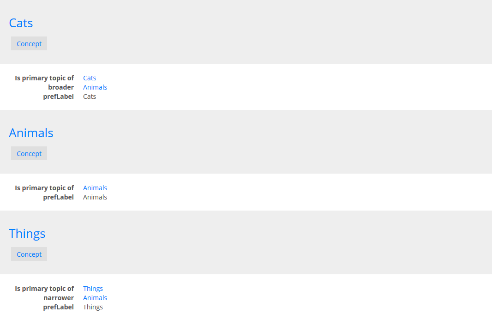
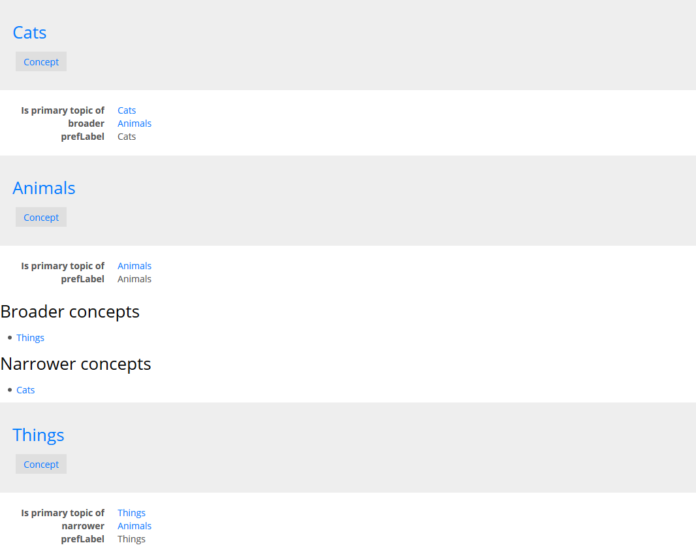
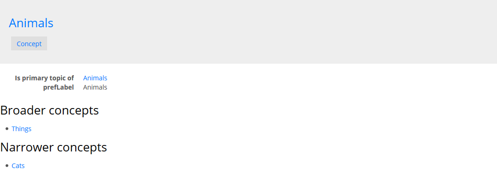

Change layout
How to customize the layout of an application and the UI of the resources
LinkedDataHub's user interface is simply a rendering of the underlying Linked Data resource descriptions, which are exposed via the HTTP API.
LinkedDataHub provides XSLT stylesheets that render a default UI layout. When building an application you might want to render a custom layout however. The recommended way of doing that is to create a new stylesheet which imports the system stylesheet and only override specific templates, while reusing the rest of the layout.
Create a stylesheet
First we need to create a new XSLT 3.0 stylesheet and use <xsl:import> to import the system stylesheet static/com/atomgraph/linkeddatahub/xsl/bootstrap/2.3.2/layout.xsl.
See an example in the SKOS demo app.
Configure the dataspace
First, either upload the XSLT file or mount it using Docker and docker-compose.override.yml:
version: "2.3"
services:
linkeddatahub:
volumes:
- ../LinkedDataHub-Apps/demo/skos/files/skos.xsl:/usr/local/tomcat/webapps/ROOT/static/com/atomgraph/linkeddatahub/demo/skos/xsl/index.xsl:ro
Then change the value of ac:stylesheet on the dataspace with base URI https://localhost:4443/ to the relative URI of the stylesheet:
<urn:linkeddatahub:apps/end-user> a lapp:EndUserApplication ;
...
ac:stylesheet <static/com/atomgraph/linkeddatahub/demo/skos/xsl/index.xsl> ;
...
Default layout
In the examples below we assume that the graph contains a SKOS taxonomy with concept instances, which can also have broader/narrower concepts.
At this point, the default layout of the current document, its topic concept, and narrower/broader concepts looks like this:

Augment output
Keep the default output using <xsl:apply-imports> or <xsl:next-match> and add new output before/after it:
<xsl:key name="resources-by-broader" match="*[@rdf:about] | *[@rdf:nodeID]" use="skos:broader/@rdf:resource"/>
<xsl:template match="*[foaf:isPrimaryTopicOf/@rdf:resource = $ac:uri][key('resources-by-broader', @rdf:about)] | *[foaf:isPrimaryTopicOf/@rdf:resource = $ac:uri][key('resources', skos:narrower/@rdf:resource)]" priority="1">
<xsl:next-match/>
<h3>Narrower concepts</h3>
<ul>
<xsl:apply-templates select="key('resources-by-broader', @rdf:about) | key('resources', skos:narrower/@rdf:resource)" mode="bs2:List">
<xsl:sort select="ac:label(.)"/>
</xsl:apply-templates>
</ul>
</xsl:template>The match pattern will match the resource descriptions that:
- are the primary topics of the requested document (i.e. its concept) and is a broader concept of some other resources in the RDF graph
- are the primary topics of the requested document (i.e. its concept) and has narrower concept(s) in the RDF graph
We can render broader concepts by making a copy of the key and the template above
and replacing all occurences of skos:narrower with skos:broader and vice versa.
With the overriding template, the layout looks like this:

Override output
To completely change the layout without keeping the default one, use the same logic
as for augmenting it, but do not call <xsl:apply-imports>/<xsl:next-match>.
Suppress output
In the above example, we have rendered skos:narrower properties in our own special way. Which means that the default output of the same
properties from bs2:PropertyList is no longer desired.
You can specify an empty template at any level (graph/property/resource) to disable output of that layout mode. For example, this will suppress the default rendering of concepts which are now shown in the customized broader/narrower list:
<xsl:template match="*[key('resources', skos:narrower/@rdf:resource)/foaf:isPrimaryTopicOf/@rdf:resource = $ac:uri] | *[key('resources', skos:broader/@rdf:resource)/foaf:isPrimaryTopicOf/@rdf:resource = $ac:uri] | *[@rdf:about = key('resources', key('resources', $ac:uri)/foaf:primaryTopic/@rdf:resource)/skos:narrower/@rdf:resource] | *[@rdf:about = key('resources', key('resources', $ac:uri)/foaf:primaryTopic/@rdf:resource)/skos:broader/@rdf:resource]"/>The match pattern will match the resource descriptions that:
- have narrower concept(s) in the RDF graph that are the primary topic of the current document
- have broader concept(s) in the RDF graph that are the primary topic of the current document
- are narrower concept of the primary topic of the current document
- are broader concept of the primary topic of the current document
<xsl:template match="*[foaf:isPrimaryTopicOf/@rdf:resource = $ac:uri][key('resources', skos:broader/@rdf:resource)]/skos:broader | *[foaf:isPrimaryTopicOf/@rdf:resource = $ac:uri][key('resources', skos:narrower/@rdf:resource)]/skos:narrower" mode="bs2:PropertyList"/>
The match pattern will match the resource properties that:
- are
skos:broaderproperties of a resource that is the primary topic of the current document and has broader concepts in the RDF graph - are
skos:narrowerproperties of a resource that is the primary topic of the current document and has narrower concepts in the RDF graph
With the supressing templates, the layout now looks like this:
